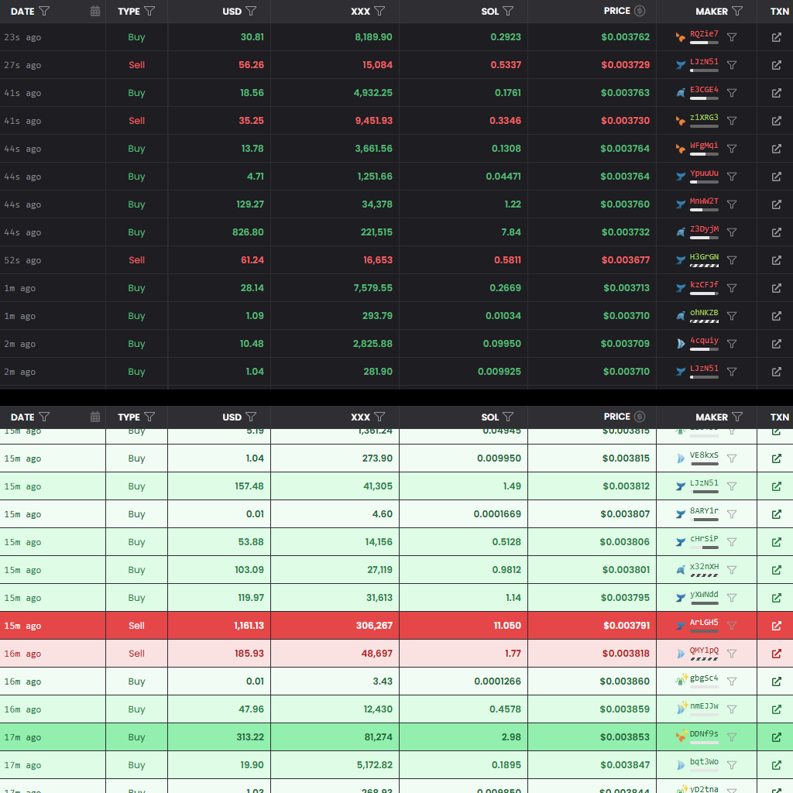

完全無料 ・ 登録不要 ・ 即利用可能
Dexscreenerの取引を
色鮮やかに。
複雑な取引履歴を、金額に基づいた5つのランクで自動色分け。
クジラの買いを逃さず、市場の勢いを直感的に把握できます。
Before & After

ランク別カラー設定
金額(USD)に応じて、背景色と文字色が自動で切り替わります
Buy (買い)
Whale ($10k+)
Dolphin ($1k+)
Shrimp ($250+)
Fish ($10+)
Plankton
Sell (売り)
Whale ($10k+)
Dolphin ($1k+)
Shrimp ($250+)
Fish ($10+)
Plankton
わずか3ステップで導入
01
ドラッグする
上の緑色のボタンを、ブラウザのブックマークバーにドラッグ＆ドロップします。
02
Dexで開く
Dexscreenerでトークンを表示し、Transactionsタブを選択します。
03
クリック！
保存したブックマークをクリックすれば、即座に色分けが始まります。
安心・安全へのこだわり
100% クライアントサイド
計算はすべてあなたのブラウザ上で行われます。サーバーへの送信は一切ありません。
API不要・権限不要
APIキーの入力や複雑な設定は不要。既存の取引ログを読み取るだけです。
超軽量・高速
純粋なJavaScriptで作られたシンプルなコード。ブラウザの動作を重くしません。
⚠️ ご利用にあたっての注意事項
登録・環境
- 登録方法: ブックマークバーにドラッグして登録してください。
- 推奨環境: PC版 Google Chrome（Edge, Safari等も可）。スマホアプリ非対応。
使い方・仕様
- Transactionsタブ: 必ず履歴タブを開いた状態で実行してください。
- アイコンとの違い: アイコン（過去実績）ではなく、現在の取引金額（USD）で色分けします。
- リセット: リロードやページ移動でリセットされます。再度クリックして起動してください。
免責事項・サポート
本ツールは視認性向上のための補助ツールであり、利益を保証しません。利用による損失の責任は負いかねます。不要時はブックマークを右クリックで削除してください。
※ 本ツールはDexScreenerの仕様に大きく依存しています。アップデート等で使用できなくなる可能性があります。動作に問題がある場合はGitHubのIssueに記載してください。